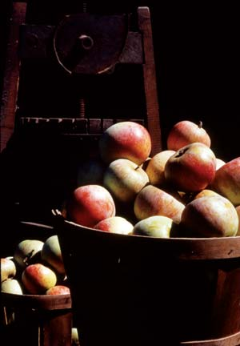
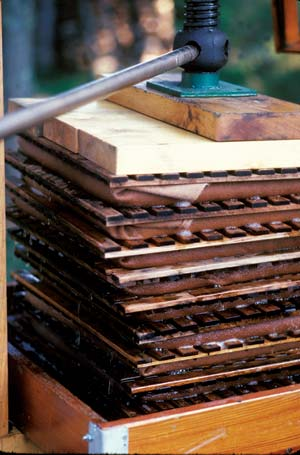
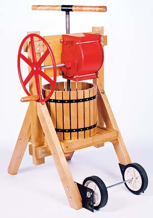
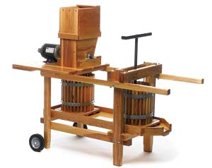

Too few people have tasted really good apple cider. That’s because it’s rare to drink fresh apple cider these days, and it’s even harder to find cider made with apple varieties that give it just the right mix of sweet and tart flavors. Instead, most commercial apple cider is made from sweet, but rather bland apples, filtered and then pasteurized. (The product we call “apple juice” is typically even more heavily filtered and is often made from concentrate.)
But when the juice is squeezed from a blend of flavorful apple varieties and consumed fresh from the apple press, there’s a remarkable difference. Real homemade cider is a spectacular full-bodied beverage with rich and complex flavors.
While fresh apple cider is often enjoyed “sweet” as a nonalcoholic beverage, the traditional drink is “hard,” or fermented. In fact, until Prohibition, virtually all beverages known as “cider” were alcoholic, and in most places outside the United States, that’s still the case. But North American hard cider has a long history and is making a comeback. Justly so, because with the right apples and a little skill, good hard cider can be as textured and varied as any wine or beer. (See Make Your Own Hard Cider.)
If your mouth is watering, you may be happy to know that great apple cider is closer to home than you think. Every fall, you can experience the rich flavors of sweet cider by finding local producers. (Try your local farmers market, or search for cider mills near you at the Local Harvest Web site.) Commercial hard cider varieties with good depth of flavor aren’t as easy to find, but it’s relatively simple to make your own from good sweet cider. Some homesteaders take their passion for cider even further: Do-it-yourself cidermakers may plant their own apple trees, harvest the fruit and grind it in a backyard cider press. Here’s how the process works and why it can become a great hobby, or even a lifelong obsession.
For as long as people have planted apple trees, we’ve known that apples do not grow true to type from seed. Instead, each seed from a single apple produces distinctly different-tasting fruit. Most of these apples are not sweet enough to be eaten fresh, so nearly all the apple trees people plant are produced by grafting branches, tips or buds from these few sweet varieties to make new trees. But there are a few advantages to planting from seed. One is that you never know when a tree with a new and delicious variety of apples will grow right in your back yard. Another is that even if the apples from your tree turn out to be bitter, you can still turn them into a delicious hard cider. In fact, as Michael Pollan writes in The Botany of Desire, we know that Johnny Appleseed’s famous trees were intended to grow apples for hard cider, not for eating: Because the trees were grown from seed, most of the apples would have been too bitter to be used in any other way.
Today, only a handful of apple varieties are sold commercially, but thousands more are available across the country in private orchards, and you can buy grafted seedlings of many varieties from mail-order nurseries. The amazing number of apple types vary in taste from blandly sweet to spicy cinnamon to vinegary tart. There also are a large number of traditional cidermaking varieties from England and the United States, which are especially suited to making hard cider. (See “Best Cider Apple Trees,” below.) With the spirit of adventure as your guide, you can mix different varieties and begin your exploration into cider making. Some of the most interesting tastes can be produced by blending sweet apples with crab apples or other bitter apples that you’d never eat fresh.
But if you want to try mixing these intriguing flavors yourself, you’ll need to find a good apple press. That could be a local cider mill that you pay to press small batches of apples for you, or a small backyard press you purchase yourself or with a few cider-loving friends.
Last fall my wife and I tried out two apple varieties and tested two backyard cider presses for this article. We started by visiting an orchard with some overgrown ‘Paula Red’ trees with apples that were too small for retail sale, and we picked several hundred pounds of these very inexpensive apples. ‘Paula Reds’ are a standard sweet apple, so we decided to mix them with ‘Winesap,’ a slightly acidic variety.
When we pressed the apples, we made three different batches of cider, each with a different ratio of ‘Paula Red’ to ‘Winesap.’ We ended up with three unique ciders and a vigorous but friendly debate on which was the best. Next year we plan to enlarge the experiment considerably, and can or freeze the cider so we can drink it year-round.
As we were trying out different flavors of cider, we also tried out the two most widely available backyard cider presses: a single-basket Jaffrey model and a double-basket Correll press.
Both presses work in much the same way: First you put the fruit into the grinder, which minces it into a fine, juicy pulp. The pulp falls into a wooden slat basket lined with a finely woven nylon bag. Next, you cover this basket with a solid wooden disc, and place it beneath the press. You turn a large threaded rod down onto the center of the disc, which slowly compresses the bag of pulp and presses out the liquid.
The Correll two-basket model uses an electric motor-driven grinder over one basket, while next to it, and on the same wooden frame, a hand-operated screw-press is located over the second basket. With this setup it’s easy for two people to work together. The Jaffrey press uses a hand-operated grinder mounted over a single large basket. With an efficient cast-iron flywheel as part of the handle, the cider fancier can crank with one hand and feed apples into the grinder with the other, or the job can be shared by two operators.
The actual grinding mechanism is similar on both models, and both produce a similar amount of juice. Slightly overripe apples will make a gallon of juice from 18 to 22 pounds of fruit. Hard, just-ripe apples, which are less juicy, give a gallon per 24 to 28 pounds of fruit. Each press can produce 1 to 2 gallons per hour, including washing, grinding and pressing, depending on how many people are helping.
Our recommendation: If you love the taste of apple cider, you should definitely try making your own. Beg, borrow, build or buy a cider press, then recruit some friends to help, and start making cider!
The best apples for hard cider ripen mid- to late-season and are called “cider apples.” Apples grown specifically for cider can be hard to come by in the United States, but if you want to make cider with just one variety, these are the ones to try.
The following apples are listed as good choices for a single varietal cider by the Mount Vernon Research and Extension Center of Washington State University: ‘Kingston Black,’ ‘Yarlington Mill,’ ‘Dabinett’ and ‘Brown Snout.’ You can read their full report here, which also includes detailed information about different classes of cider apples.
However, most top quality ciders are made with a blend of several varieties of apples, and there are many excellent multipurpose apples grown around the country that are good choices for cider. These include ‘Winesap,’ ‘Gravenstein,’ ‘Jonathan,’ ‘Esopus Spitzenburg’ and several ‘Russet’ subvarieties (including ‘Golden,’ ‘Roxbury’ and ‘Ashmead’s Kernel’). But this is just a starting place. Many kinds of apples make good additions to cider, including crab apples, so don’t be afraid to experiment!
All-Seasons Homestead Helpers
Jeffersonville, Vt.
(800) 649-9147
Homestead Harvest
Anchorage, Alaska
(877) 300-3427
Correll Cider Presses
Elmira, Ore.
(541) 935-3825
These commercial growers sell two or more varieties of cider apple trees.
Fedco Seeds
Waterville, Maine
(207) 873-7333
Greenmantle Nursery
Garberville, Calif.
(707) 986-7504
Raintree Nursery
Morton, Wash.
(360) 496-6400
Southmeadow Fruit Gardens
Baroda, Mich.
(269) 422-2411
Vintage Virginia Apples
North Garden, Va.
(434) 297-2326
|
 WALTER CHANDOHA Fall is the season for enjoying fresh apple cider. |
 LYNN KARLIN The hydraulic press is another type of press, most often used by commercial cider makers. |
 COURTESY OF JAFFREY MANUFACTURING CO. Jaffrey Press |
|
 COURTESY OF CORRELL CIDER PRESSES Correll Press |
|
|